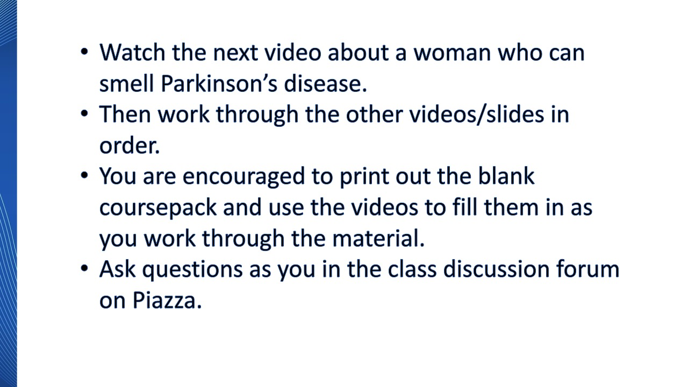

1.1 Structure of Data
Instructions

Smelling Parkinson's Disease
Why Collect Data?
Self Assess - Sample or Population?
A subscription-based music website tracks its total number of active users.
Is this a sample or a population?
Sample
Not quite. The music website is considering all of its active users not a subset.
Population
Perfect. The music website is considering all of its active users.
Self Assess - Sample or Population?
A questionnaire to understand athletic participation on a college campus is emailed to 50 college students, and all of them respond.
Is this a sample or a population?
Sample
Yes, the survey was sent to a subset of the students.
Population
No, the survey was sent to a subset of the students, not all of the students.
Cases and Variables - 1.1.1
Self Assess - Literacy Rates
Record whether or not the literacy rate is over 75% for each country in the world.
What are the cases?
Books
No. We're not recording information about books.
Countries
Yes! We will record the proportion of literate people in each country.
People
We are going to record information about each country, not each person.
Self Assess - Literacy Rates
Record whether or not the literacy rate is over 75% for each country in the world.
What is the variable?
Whether or not each person reads.
This is involved, but we only record information about each country, not each person.
The proportion of literate people.
Great. We will record the proportion or fraction of people in each country who are literate.
Self Assess - Literacy Rates
Record whether or not the literacy rate is over 75% for each country in the world.
The variable is the proportion or rate of literacy in each country. Is this variable categorical or quantitative?
Categorical
No, we're recording meaningful numerical information.
Quantitative
You betcha! The values recorded are meaningful numbers.
Computer Ownership at UWL - 1.1.2
Wetlands Ecology - 1.1.3
Explanatory and Response Variables - 1.1.4
Self Assess - Fertilizer and Yield
For the scenario:
Amount of fertilizer used and the yield of a crop.
Is “fertilizer used” the explanatory or the response variable?
Explanatory
Good. Different amounts of fertilizer could explain differences in crop yield.
Response
Not so much ... The amount of crop yield doesn't really explain how much fertilizer was used.